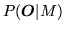
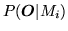
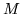
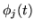
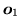
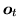
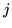
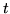
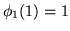
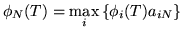

| (1.29) |
The previous section has described the basic ideas underlying HMM parameter re-estimation using the Baum-Welch algorithm. In passing, it was noted that the efficient recursive algorithm for computing the forward probability also yielded as a by-product the total likelihood . Thus, this algorithm could also be used to find the model which yields the maximum value of , and hence, it could be used for recognition.
In practice, however, it is preferable to base recognition on the maximum likelihood state sequence since this generalises easily to the continuous speech case whereas the use of the total probability does not. This likelihood is computed using essentially the same algorithm as the forward probability calculation except that the summation is replaced by a maximum operation. For a given model , let  represent the maximum likelihood of observing speech vectors  to  and being in state  at time . This partial likelihood can be computed efficiently using the following recursion (cf. equation 1.16)
|  | (1.28) |
| (1.29) |
|  | (1.30) |
As for the re-estimation case, the direct computation of likelihoods leads to underflow, hence, log likelihoods are used instead. The recursion of equation 1.27 then becomes
This concept of a path is extremely important and it is generalised below to deal with the continuous speech case.
This completes the discussion of isolated word recognition using HMMs. There is no HTK tool which implements the above Viterbi algorithm directly. Instead, a tool called HVITE is provided which along with its supporting libraries, HNET and HREC, is designed to handle continuous speech. Since this recogniser is syntax directed, it can also perform isolated word recognition as a special case. This is discussed in more detail below.